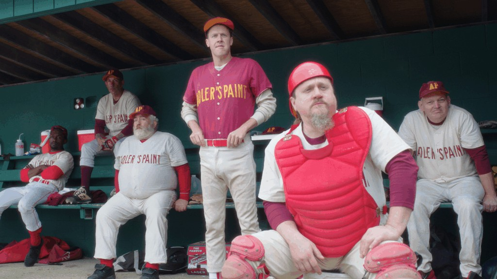

| 导演／剪辑 | 卡森·伦德（Carson Lund，长片首作） |
| 编剧 | 卡森·伦德、迈克尔·巴斯塔（Michael Basta）、内特·费舍尔（Nate Fisher） |
| 摄影 | 格雷格·探戈（Greg Tango） |
| 音乐 | 卡森·伦德、埃里克·伦德（Eric Lund，导演之弟） |
| 制片 | 迈克尔·巴斯塔、大卫·恩廷、泰勒·陶尔米纳（Tyler Taormina）、迈克尔·里克特 |
| 制作公司 | Omnes Films（美，电影小组）· Nord-Ouest Films（法）等 |
| 发行 | Music Box Films（美国） |
| 片长 | 98 分钟 |
| 画幅／制式 | 未见官方公开说明（截至 2026.08.27） |
| 首映 | 2024.05.09 第 77 届戛纳电影节「导演双周」（与主竞赛平行的独立单元，不排名次，面向新锐与作者电影；竞逐金摄影机奖） |
| 公映 | 2025.03.07（美国）／2025 秋（日本，片名《さよならはスローボールで》）／中国大陆暂无档期信息 |
| 票房 | 约 100 万美元（据 Box Office Mojo，2026.08.27 查询） |
| 基思·威廉·理查兹 | 艾德（Ed Mortanian） 阿德勒涂料队投手兼队长，执意投完九局；演员首个主演角色 |
| 克利夫·布莱克 | 弗兰尼（Franny） 记分员，全场唯一从头到尾在场的人——「影片的灵魂」（导演语） |
| 弗雷德里克·怀斯曼 | 布兰奇·莫兰（Branch Moreland） 电台记者，声音出演——纪录片大师客串虚构电影 |
| 雷·赫里布 | 里奇（Rich Cole） 河犬队老兵，把一切都比作「战斗」 |
| 比尔·「太空人」·李 | 李 前大联盟传奇投手，饰同名角色 |
| 乔·卡斯蒂廖内 | 马利纳里（Mallinari） 红袜电台元老解说，客串憎恶本行的播报员 |
先交代这期做的是一部什么电影。《高弧慢球》（英文片名 Eephus）是美国独立导演卡森·伦德的长片处女作，2024 年 5 月在戛纳电影节「导演双周」首映（详见档案表），次年 3 月在美国公映，片长 98 分钟。片名来自棒球里一种近乎绝迹的投法：把球以极高的弧线、极慢的速度抛向本垒，不求制胜，只扰乱击球手对时间的把握。影片讲的事一句话可以说完：美国新英格兰地区（东北六州）的一座小镇上，一块业余棒球场要拆了，两支「星期天联盟」球队——成员是白天上班、周末打球的普通人——回到这块打了几十年的场地打最后一场；九局打完天还没黑透，他们打开汽车大灯，接着打。
这部电影的特别之处，在于它把「什么都发生」拍成了「什么都没发生」：没有闪回，没有场外戏，没有主角弧光，甚至没有传统意义上的冲突——看它，更像是坐在球场边晒了一下午太阳。而恰恰是这种「无事」，让影评界记住了它：《洛杉矶书评》为它写下长文，纪录片大师弗雷德里克·怀斯曼——那位五十年来以拍摄学校、医院、图书馆等公共机构闻名的美国导演——也愿意在年过九旬仍愿意为它配一段电台旁白。
本期场刊沿第四期与滨口学术特刊的路线，把重心放在学术与深度批评上：《电影人》（Cineaste）杂志的导演长访、《洛杉矶书评》的评论长文、哈佛大学电影资料馆的专文、Reverse Shot 的影评，都将在正文中被引用与节译。号外则研究影片背后的 Omnes 电影小组——一个没有注册公司、也没有创作宣言的五人创作集体，在美国独立电影的资金困境里靠「互相给对方拍片」运转。本期试图回答的问题是：一部放弃了冲突、高潮与主角弧光的电影，靠什么让观众看到底？三篇影评分别从时间、业余与观看三个方向作答。不熟悉棒球的读者不必担心：必要的规则与俚语，正文首次出现处均随文解释。
影片的故事发生在 1990 年代的新英格兰——彼时美国职业棒球大联盟还没有「投球时钟」（2023 年引入的强制计时新规），球赛的时间边界只有天光与裁判的钟点。《高弧慢球》的全部叙事时间不到一天，却压着一整代人的时间。这不是修辞：影片的天色本身就是结构——从秋日午后到黄昏，再到车灯下的夜。伦德在《电影人》访谈里说得明白：「随着天黑，球场变得抽象——它失去清晰与形状。阴影里，你失去球场的组织性，场域本身在影片的进程里衰朽。」时间在片中不是一个维度，而是主角之一：光线走完它的一天，恰如这群人的棒球生涯走完它的几十年。
把影片放进时代坐标，这个设计更加锋利。2023 年，美国职业棒球大联盟启用「投球时钟」，强制压缩比赛节奏，把动辄三小时的比赛塞进两个半小时——用 LARB 影评人马修·里奇的话说，棒球正在「试图挤进其他娱乐形式的形状」。而伦德把他的球赛设在 1990 年代，时钟尚未到来，时间的唯一边界是日光与裁判的耐心。《高弧慢球》由此成为「对棒球悠闲时代的一场纪念」。需要说明的是，「纪念」发生在影片的形式而非角色的意识里：片中人对「时钟之前」一无所知，是等速、无高潮的形式本身在替今天完成追悼——影片是站在投球时钟时代回望的一部关于「之前」的电影。
更进一步的，是影片对叙事成规本身的拒绝。伦德说：「一部只是渐弱（decrescendo）的电影，本身就是对叙事电影继承观念的一种回击——电影总是积累向一个高潮，而这部正相反。」九局战罢，胜负未分；车灯亮起，他们续赛；直到最后，结束的方式不是再见全垒打（walk-off：下半局一击终结比赛的教科书结尾），而是一次四坏球保送（投手接连投失四球，击球员被礼貌地请上一垒）——不战而终。「棒球自会告诉你，它何时不再需要你」里奇写道，「以耳语结束了许多人的职业生涯」。这部电影的「一天」，因此是一代人与一项运动相互告别的全过程：慢到足以让人来得及告别——影片至少提供了这种可能性；是否仁慈，留给散场后的观众。
先交代一个背景：业余棒球的裁判是按小时受雇的，时间一到便有权离场——这与职业体育的「比赛必须完整」不同，星期天联盟的规则只由在场者的意愿维系。影片最动人的段落，正发生在裁判按时下班之后。比赛却没有理由停止：两队自己商量规则，请记分员弗兰尼坐进广播席充当「中立第三方」，用汽车大灯照出一块可以续赛的内野（infield，本垒至一、二、三垒围成的菱形区域）。伦德在访谈里把它称为「一种不完美但流动的民主」——没有权威之后，「他们想尽办法继续下去，无论多么混乱」。
这个场景的政治性，被导演自己点破：「我们之所以不再有从前那样的闲暇时间，是因为美国的政治烂掉了……人们必须打两三份工才能糊口，这种压力之下，没有人有时间只是待着，去做那些他们热爱的事——去拥有『无意义的时间』。」在「优化每一刻、让每一刻都产生货币价值」的晚期资本主义时间里，一群业余球员坚持把一场没有意义的比赛打完，本身就被导演赋予了异议的姿态——严格说，这份政治性成立于影片上映的当下语境（导演访谈中的自我阐释），而非 1990 年代剧情内部的自觉。伦德不夸张：「也许它甚至有点激进——它在请求我们珍视死时间（dead time），并想办法让它重新成为生活的一部分。」
「业余」在这里必须按词源理解：amateur，爱其所做之人。片中大量动作发生在画外——你只听到球棒的声音，看到失意的击球员走回休息区的背影；真正的镜头时间给了垃圾话、争执、找球的漫游。这是一种对「精彩」的系统性的拒绝：业余比赛的迷人处从来不是竞技水平（里奇笔下的「次优表现散布全场，真正的高光时刻寥寥」），而是它容许失败、容许无聊、容许一个人仅仅因为喜欢而继续。当艾德告诉场边小孩「别打棒球，对你有好处」时，他不是在幻灭——他比谁都清楚自己为什么还站在这块场地上。还须诚实地记下一笔：这块被悼念的闲暇世界几乎完全属于白人中年男性——影片未对此发问，观众不必替它回避。
影片真正的中心人物，不是任何球员，而是记分员弗兰尼。先说明记分员是做什么的：他坐在场边，用一套专门的符号为每一颗投出的球、每一次攻守做正式记录——一场比赛的官方历史由他写下。弗兰尼第一个到场，最后一个离开，「他试图以自己的方式、按自己的条件记录并消化这段经验」。伦德在访谈中直接给出了读法：「他是观众的替身……他就像一个影院观众。」而全片唯一的一次叠化（dissolve，一个画面渐渐消融于下一个画面的转场手法），是导演亲口指认的密码：「我们只从星空溶接到弗兰尼——所以那是从银河来的。」从宇宙到个体，从星图到记分簿：观看，是这部电影里与被观看等重的事件。
这个设计因怀斯曼的在场而加倍。为电台记者配音的弗雷德里克·怀斯曼，用五十年纪录片（《提提卡失序曲》《书缘：纽约公共图书馆》）定义了「观察式」的电影伦理；哈佛电影资料馆的专文因此把《高弧慢球》放进「细致入微的观察传统」。一位毕生拍摄真实机构的导演，在一部虚构电影里成为「画外之声」——电台晨间新闻宣布球场的死刑，复古广告从休息区的收录机里飘出：画外世界在这部电影里只有声音，正如球场在这群人的生活里只有这一个下午。
于是影片结尾的隐喻完成了闭合：裁判走了，唯一的办法是「把场地照亮」——「就像我们拍电影时那样，我们需要给场景打光」，伦德笑着说。车灯亮起的那一刻，观众与弗兰尼合为一体：都是在一块正在消失的场地上，借着人为的光，坚持看完最后一场。电影散场与球赛散场，在这个镜头里是同一件事。
伦德本人是摄影师（为陶尔米纳等掌镜），本片却交给了挚友格雷格·探戈——导演自述勘景全部亲力亲为，「找到这块场地后，我知道要在这里花很多时间」。InReviewOnline 的评语别致：探戈「惟妙惟肖地模仿了伦德本人的掌镜」——他的语法是固定的机位与漫长的耐心，在群像调度中克制地使用变焦与横摇，让谈话在画框内自行发生。低照度夜戏（车灯球场）是全片摄影的成人礼：光源只有车头灯与记分席的灯，球场从熟悉的公共空间退化为一块抽象的光斑之地。
全片的空间是封闭的（无闪回、无场外戏），声音却是开的：怀斯曼的晨间新闻、卡斯蒂廖内饰演的播报员对本行的牢骚、休息区收录机里的复古广告与第七局伸展（比赛中场起身唱歌舒展的传统间歇）时的《带我去球场》——画外世界的全部信息经由电台进入，恰如老式转播把球场带给不在场的人。片尾的声音设计同样著名：画外的烟花与钟楼钟声「明确宣告了比赛的终结」（BOMB）。
伦德亲自剪辑。他在 InReviewOnline 访谈〈拥抱省略〉中谈到从早期「蔡明亮、《双车道柏油路》」式的慢电影构想里「找到平衡」：删除叙事性钩子，保留时间流逝的质感。大量攻守发生在画外（只闻其声），剪辑把注意力全部让给等待与闲谈——「省略」不是回避，而是选择看什么、不看什么的价值排序。
截至本刊发稿，片方未公开画幅与拍摄制式的权威说明；本刊不作猜测，仅注明「未确认」。观感上的稳定构图与颗粒质感，请以影院放映为准。
| 戛纳首映 | 2024.05.09（导演双周，竞逐金摄影机奖） |
| 美国 | 2025.03.07（Music Box Films） |
| 日本 | 2025 秋（片名《さよならはスローボールで》） |
| 中国大陆 | 无档期信息（豆瓣条目《高弧慢球》已收录，评分 7.4，评价两极（2026.08.27 查询）） |
以下两篇为本期核心学术文本的长节译（编辑部试译，直译为主；所据为公开网络版，节译范围随文注明，引用请以原文为准）。
之一 电影与棒球共同的危机（访谈节译）
之二 如此不自然地慢（论文节译）
§1 「公司」还是「小组」
《高弧慢球》的字幕升起时，出品方一栏写着 Omnes Films——拉丁语的「所有人」。filmmaker 杂志 2024 年戛纳期间专访了这个小组的双子星：本片导演卡森·伦德，与同届带着《Miller's Point 的平安夜》入围的泰勒·陶尔米纳。当被问及「Omnes 是一家公司吗」，伦德的回答是：「公司意味着注册法人，而我们目前没有。我想，眼下我们仍然把它看作一个集体（collective）。」「一群朋友，在彼此的热情项目上互相干活。」陶尔米纳补充。谁算成员？「谁出现在我们所有的聚会上，一起来烧烤，谁就是。」——正式成员名单大约五人：伦德、陶尔米纳、迈克尔·巴斯塔、乔纳森·戴维斯、埃里克·伦德，另有洛雷娜·阿尔瓦拉多等长期合作者。
Omnes 的运转方式，用 filmmaker 的话说是「switch hit」（棒球术语：左右开弓）——成员在彼此的项目里换位：伦德掌镜了陶尔米纳的《Miller's Point 的平安夜》，陶尔米纳监制了《高弧慢球》；伦德拍摄并剪辑了戴维斯的《海妖拓扑学》，那也是小组的起点之一（另一部是陶尔米纳的《火腿三明治》，两片同为微预算，2021 年让小组登上 filmmaker 杂志的「25 张新面孔」（该刊每年评选的年度新导演榜单））。2024 年，两部长片同届入围戛纳导演双周——一个没有法人的「集体」，完成了多数独立公司梦寐以求的双响炮。问及「权利与义务」，陶尔米纳的答案反商业逻辑：「不是『我帮你挠背、你帮我挠』，而是——『你在拍电影？太棒了！』」
没有宣言，但有母题。陶尔米纳承认，「文化衰朽」不知为何贯穿着他们拍过的所有电影——从《火腿三明治》的成人礼餐厅，到《高弧慢球》的待拆球场，再到《Miller's Point 的平安夜》的郊区圣诞：都是美国日常空间正在褪色的时刻。他们也清楚「厂牌」的分量：伦德白天在经纪公司上班，对 A24 式的品牌效应有清醒的观察——「人们开始意识到集体的存在。Omnes 不是 A24，但我们确实把它看作一枚印鉴，假以时日，它会赋予作品某种品质与感受力。」
把这三条放在一起——无宣言、互换角色、共同母题——Omnes 提供了作者制之外的一种当代答案：在预算更薄、发行更难的独立电影现场，互相成为对方的生产资料。当作者论把「一个人的视线」神圣化，Omnes 说：也可以是一群朋友共享的视线。这恰好回应了《高弧慢球》的内部政治——裁判离场之后，一群业余者自己把比赛打了下去。当然，这个类比只在「自我组织」的层面成立：《高弧慢球》同样依靠法国 Nord-Ouest 合制、专业发行与节展体系走向观众——「无法人的集体」是创作的自我叙述，而非工业的全貌。但正是在资金的缝隙里坚持互相拍片的这一点上，电影小组就是独立电影的星期天联盟。
〔注〕本节据 filmmaker 杂志 2024 年戛纳专访（原文）与 Omnes Films 官方站资料（omnesfilms.com）编写；MUBI Notebook 的伦德×陶尔米纳对谈未能取得。
学术与深度批评：Cineaste 访谈（Paul Risker，2025 夏）／LARB（Matthew Ritchie）／Reverse Shot／Split Tooth Media／哈佛电影资料馆专文／BOMB／InReviewOnline 访谈／filmmaker（Omnes 专访）／Le Cinéma Club／Moveable Fest。未取得：Cahiers／Positif 相关评论（纸本）、MUBI Notebook 伦德×陶尔米纳对谈、Sight & Sound 专文——均如实标注。
节展与发行：戛纳导演双周官方页／Music Box Films 官方页／Omnes Films 官方站。
口碑与观众层：烂番茄／Metacritic／Letterboxd／豆瓣（评分均注明查询日期）；GQ Japan、cinemore 导演专访（日本公映口径）；维基百科条目仅作背景核对，不列为学术依据。
头图与素材：封面剧照与号外影片图来自 Omnes Films 官方站（omnesfilms.com）公开素材。
关联阅读：第四期《突如其来》（滨口龙介单片研究）／学术特刊《滨口龙介：七个美学问题》。